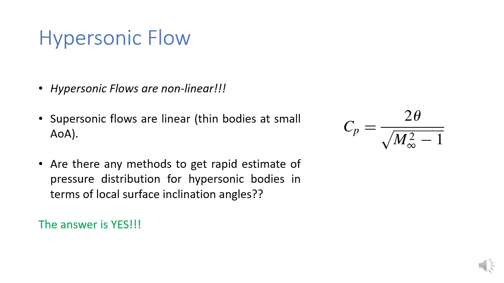

Slide 2
-
Hypersonic flow equations are non linear in nature, and this could be seen from the vorticity interaction, and thin shock layer. But recall that the pertubation velocity potential equation, is linear when applied to thin body for small angle of attack (for subsonic and supersonic), whereas for transonic and hypersonic, it would have resulted in non-linear equation. For supersonic flows, the expression given above could be used to calculate the coefficient of pressure. And we see that it only depends on theta, and mach number.
Recall:
-
What is the perturbation velocity potential equation?
The perturbation velocity potential equation is derived under the assumption of compressible, irrotational, isentropic flow. In such flows, the velocity field can be expressed using a potential function 𝜙, where the velocity components are simply the spatial derivatives of ϕ. By substituting this potential representation into the governing equations of fluid motion and then considering the case of small disturbances to a uniform freestream, we arrive at a governing equation for the perturbation potential, usually denoted by ϕ′.This equation forms the basis of thin-airfoil theory and linearized supersonic theory.
-
Why is it that the perturbation velocity potential equation is linear when applied to thin bodies at small angle of attack for subsonic and supersonic flows, but becomes non-linear in the cases of transonic and hypersonic flows?
The perturbation velocity potential equation starts from the assumption of irrotational, compressible, isentropic flow, where the velocity field can be described using a potential function. For thin bodies at small angle of attack, the disturbances introduced into the freestream are very small compared to the freestream velocity. In subsonic and supersonic flows, these perturbations remain small enough that we can linearize the governing equation by neglecting higher-order terms. The result is a linear partial differential equation, which is why theories like thin-airfoil theory for subsonic flows or linearized supersonic theory work so well. However, this simplification breaks down in two regimes. In transonic flows, even a small disturbance can cause local regions where the flow speed crosses Mach 1. This generates large variations in pressure and velocity, so the higher-order terms that were previously neglected suddenly become significant. This makes the governing potential equation non-linear in character. Similarly, in hypersonic flows, the disturbances are no longer small because of extreme compressibility effects, thin shock layers, and strong shock–boundary layer interactions. These effects reintroduce the non-linear terms into the potential equation, just as in the transonic case, but for different physical reasons. This is why the perturbation velocity potential equation is linear only for subsonic and supersonic flows under small disturbance assumptions, but becomes non-linear for both transonic and hypersonic regimes.

-
The naswer is YES!